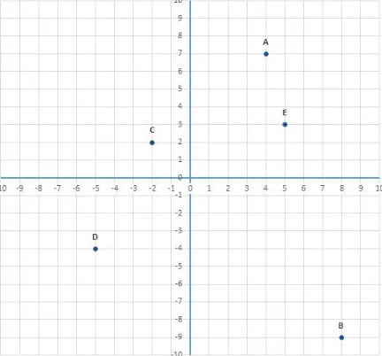

Recomposição da Aprendizagem
Recuperação
- Transforme os numeros decimais em fração:
a) 0,02 =
b) 0,4 =
c) 0,22222...
d) 0,55555....
- Transforme a fração em número decimal:
a) 1/3 =
b) 2/5 =
c) 10/4 =
d) 7/3 =
- Segue a imagem abaixo:

Indique as coordenadas dos pontos A, B, C, D e E?
- Na imagem anterior Calcule:
a) Distância entre A e B?
b) Distância entre A e C?
c) Distância entre A e D?
e) Distância entre A e E?
- O que é uma reta?
- O que é uma semirreta?
- O que é um segmento de reta?
- Qual a diferença e semelhança entres elas?